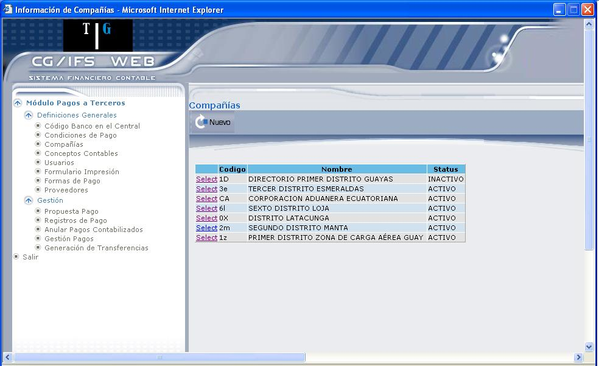
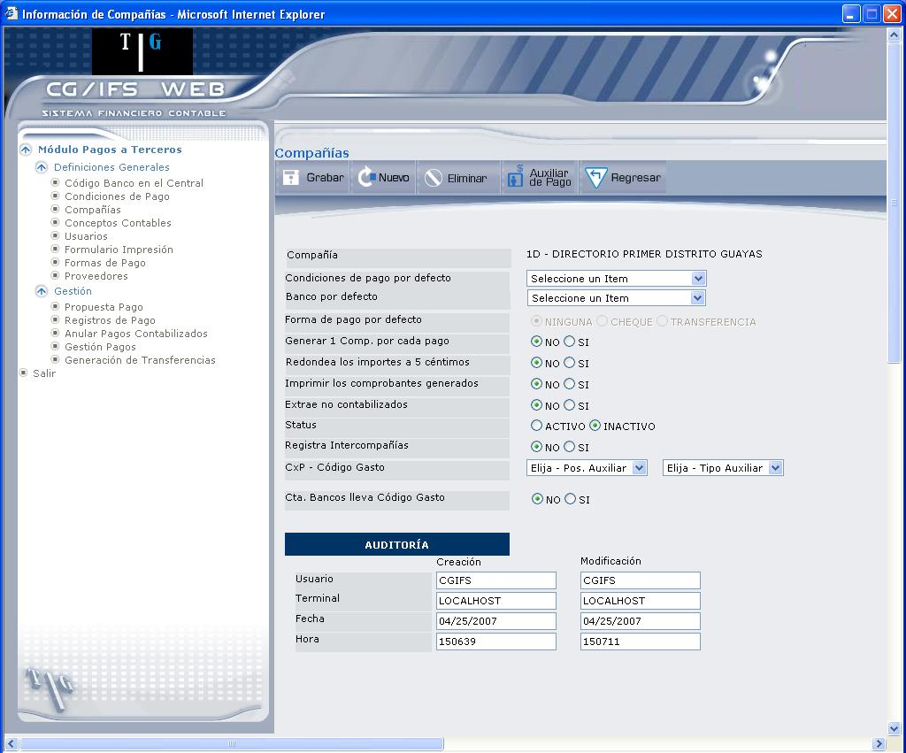
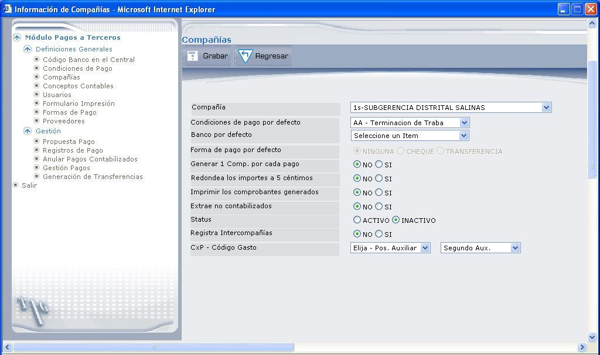
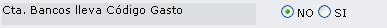
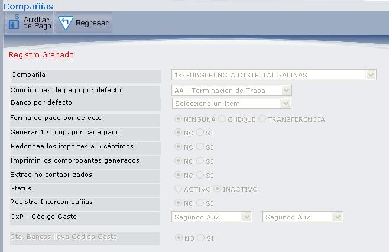
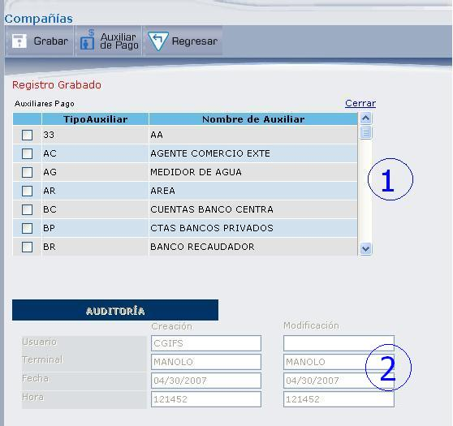
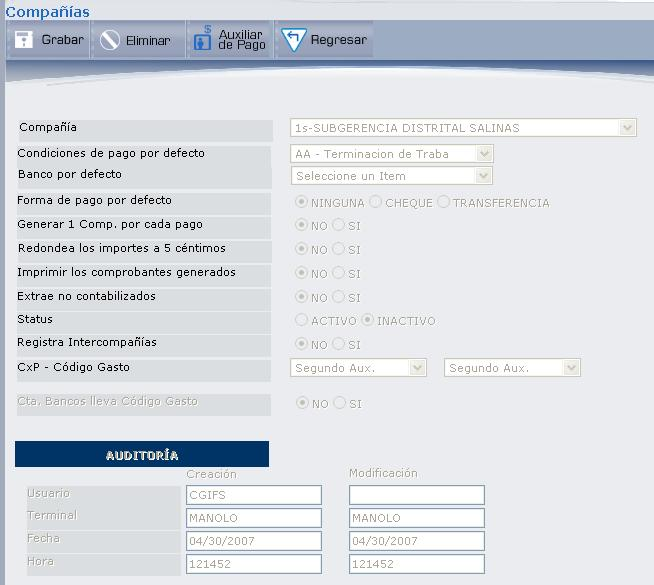

Compañías
Esta opción permite definir los parámetros adicionales a nivel de compañía. Como ejemplo podemos indicar: tipo de comprobante a generar, opción de generar un comprobante por cada cheque emitido o de un comprobante por todo el lote de cheques emitidos en una sesión, código de condición de pago, etc. Si se indica aquí un código de condición de pago se tomarán estas condiciones de pago como valor por omisión para todos los proveedores que no tengan definida condición de pago. También se indica aquí los códigos de cuentas intercompañías. En esta opción no pueden crearse compañías nuevas.
Al seleccionar la opción aparecerá un formato de pantalla como el que muestra la Figura 3.10.

Figura 3. Compañías.
Al ingresar a esta pantalla pueden observarse las compañías que están definidas en CG y sus principales campos: código de compañía, nombre de compañía y status del registro.
Para consultar o actualizar una compañía dé clic en el vínculo Select; se desplegará el detalle de la Compañía como se muestra en la Figura 3.11.

Figura 3. Detalle de Compañía.
La descripción de cada campo y botón se explica en la pantalla de la Figura 3.12, que se presenta al registrar una nueva parametrización de la compañía.
BOTÓN


Figura 3. Registrar parametrización de Compañía.
Compañía:
Seleccione la Compañía que desea registrar, aquí se despliega código y nombre de la compañía.
Condiciones de pago por omisión:
Seleccione el código de la condición de pago que se asignará a todos los proveedores que no tengan definida ninguna condición de pago. En el momento de hacer la selección de pagos se puede modificar el importe de descuento y el importe de interés por mora. Este campo es opcional. Si se indica alguna condición de pago ésta debe estar definida en la tabla de condiciones de pago.
Banco por omisión:
Seleccionar un código de banco que se usará para pagar a los proveedores que no tengan definido ningún banco preferente.
Forma de pago por omisión:
Aquí se indicará la forma de pago a través de la cual se pagará a los proveedores que no tengan definida ninguna forma de pago.
Generar 1 Comp. por cada pago:
Cuando se generan los comprobantes de una sesión de pagos es posible hacer un comprobante por cada pago que se realice, por ejemplo: un comprobante por cada cheque. También es posible generar un comprobante que agrupe todos los pagos que se hicieron en cada compañía. Con este parámetro usted indica cuál de las dos alternativas desea tomar. Si selecciona “SI” se generará un comprobante por cada pago, si selecciona “NO” se generará un solo comprobante por cada compañía.
Redondea los importes a 5 céntimos:
Este parámetro indica si deseamos que los importes calculados tales como descuento, impuesto, interés, etc., sean redondeados a cinco céntimos o no. Seleccione “SI” para que los importes calculados sean redondeados, caso contrario seleccione “NO”.
Imprimir los comprobantes generados:
Si desea que al momento de imprimir los pagos se imprima también un listado de los comprobantes que el sistema genera seleccione “SI”, caso contrario seleccione “NO”.
Extrae no contabilizados: (SI ó NO)
Esta opción se utilizará en caso de querer seleccionar para pagar movimientos que aún no han sido contabilizados.
Status:
Indica el estados del registro: “ACTIVO” o “INACTIVO”.
Registra Intercompañías:
Seleccione “Si” o “No”. Si hay transacciones intercompañías, es decir, se da el caso de que una compañía pague las deudas de otra, el sistema está en capacidad de generar los asientos para contabilizar esta transacción. Para poder realizar este tipo de transacciones es necesario definir las cuentas intercompañías.
CxP – Código Gasto:
Seleccione la Cuenta por pagar y el código de la cuenta de gasto.
Al seleccionar la cuenta de Gasto se despliega el siguiente campo:

Seleccione “SI”, si la cuenta de bancos lleva Código de Gasto, caso contrario seleccione “NO”.
Una vez que haya ingresado toda esta información presione el botón GRABAR, que despliega todos los campos protegidos y en la parte superior el botón AUXILIAR DE PAGO, como se muestra en la Figura 3.13.

Figura 3. Registro de Compañía grabado.
BOTÓN

Figura 3. Registro de Auxiliares.
La pantalla que despliega la Figura 3.14, se ha dividido en dos secciones que corresponden a:
SECCIÓN 1:
Marque el/los casilleros de las cuentas auxiliares de pago. Una vez que seleccione, presione el botón GRABAR.
El botón REGRESAR permite volver a la pantalla anterior.
SECCIÓN 2:
Contiene información para Auditoría.
Creación: Nombre del usuario que registró los datos de la compañía, Nombre de la Terminal, Fecha y hora de creación.
Modificación: Nombre del usuario que realizó la última modificación, Nombre de la Terminal, Fecha y hora de la última modificación.
Después de grabar se despliega la pantalla con todos los campos protegidos, como muestra la Figura 3.15.

Figura 3. Registro Grabado.
Únicamente podrá utilizar los botones de la parte superior:
Botón REGRESAR: para volver a la pantalla anterior.
Botón AUXILIAR DE PAGO: Despliega las cuentas auxiliares de pago.
Botón ELIMINAR: Elimina los datos ingresados en la Compañía.
Created with the Personal Edition of HelpNDoc: Free CHM Help documentation generator